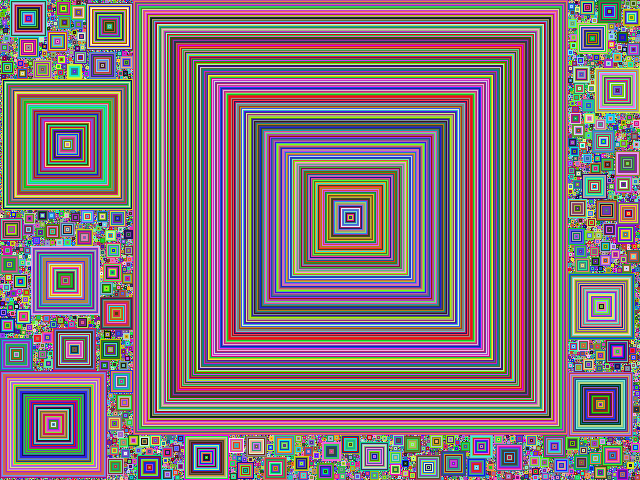

The purpose of this assignment is to learn to 1. Manipulate a ColorGrid object. 2. Generate colorful squares
You will generate a visualization that looks like in the figure aboce.
You will be drawing Square Fill using the following logic: (examples provided below.) - Start with an empty canvas. - Repeat the following steps. 1. Search the canvas for an empty pixel. 2. Set the pixel to a random color. 3. If the surrounding square of pixels are empty and not outside the canvas continue otherwise go back to step 1. 4. Color the surrounding square of pixels with a color. 5. Expand the square by 1 and repeat step 3. - Stop once the canvas is fully colored in.